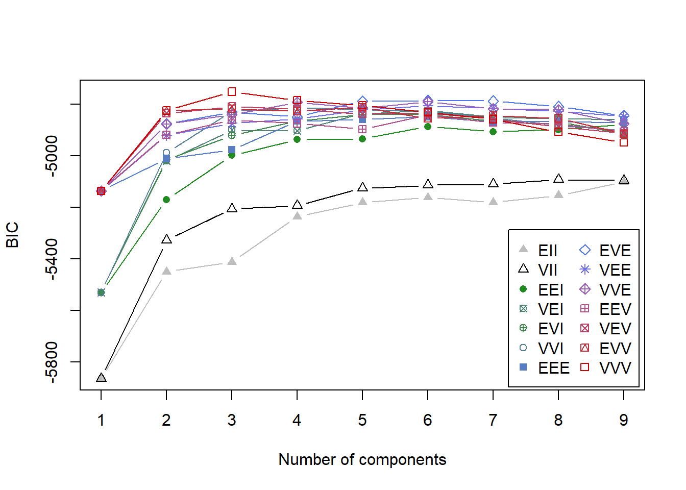
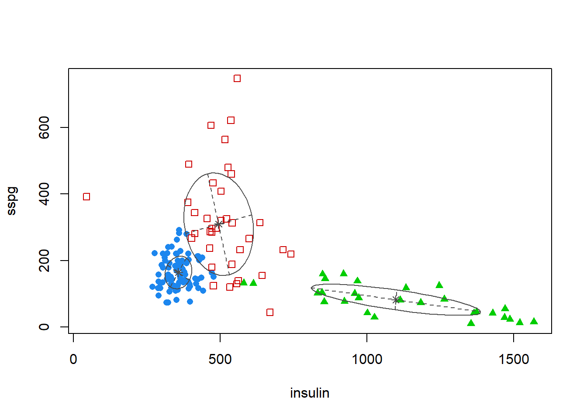
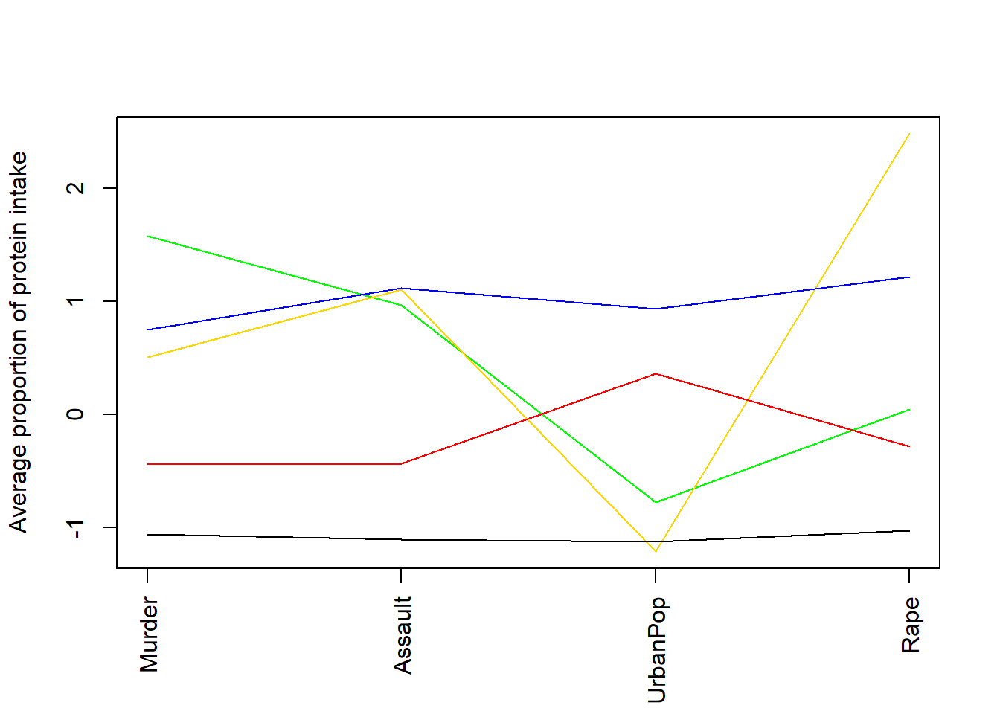

Chapter 5 A. Visualisation - Map Weights onto Colors
5.1 Vis - 1) Training Process
As the SOM training iterations progress, the distance from each node’s weights to the samples represented by that node is reduced. Ideally, this distance should reach a minimum plateau. This plot option shows the progress over time. If the curve is continually decreasing, more iterations are required.

5.2 Vis - 2) Node Counts
The Kohonen packages allows us to visualise the count of how many samples are mapped to each node on the map. This metric can be used as a measure of map quality - ideally the sample distribution is relatively uniform. Large values in some map areas suggests that a larger map would be benificial. Empty nodes indicate that your map size is too big for the number of samples. Aim for at least 5-10 samples per node when choosing map size.


5.5 Vis - 5) Heatmaps
a=som_model$codes[[1]]
par(mfrow=c(4,4))
for(i in 2:17){
plot(som_model, type = "property", property = a[,i-1], main=names(animals)[i])
}
## null device
## 1